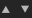

Bakers Legacy Interface
Here is the description of the baker interface available in Adobe Substance 3D Designer versions before 6.0.4.
Overview

The baker panel is divided in 4 parts:
1: Scene

Let you define which part of the mesh is involved in the baking process.
New in version 6, you can also select by material:

2: Bakers

By pressing the  button, you can add the desired bakers to the processing list
button, you can add the desired bakers to the processing list
Bakings are processed following the list order (from top to bottom): this may be important if you want to reuse the result of a bake (like the normal map) in another baking process
Clicking on the "+" in the bakers layout lets you add the bakers in a stack (You can put as many bakers as you want in a stack).
.
You can remove a baking process from the list by pressing 
You can reorder the baking process list by selecting a baking process and using 
3: Bakers parameters

This section displays the specific options for the current selected baker.
4: Common Parameters

Displays the parameters that are shared between bakers.
By default, changing one of these parameters; will affect all the bakers, except if you check Override Parameters, common to all bakers: in that case, the changes will be local to the current baker.
- The Resource Name field lets you change the name of the generated bitmap, if desired.
- The File Format drop-down list lets you change file format from the default (Windows or OS/2 Bitmap format, "BMP").
- The Place resource into a mesh specific folder check-box lets you choose whether the generated bitmap is stored at the same level as the model, or inside a new sub-folder named "Resources".
- The Method lets you define whether the new bitmap resource should be linked or embedded into the Substance package.
- The Folder lets you define where to save the maps.
Pressing the OK button at the bottom right of the bakers window will start the baking process.
New in version 6: you can now cancel the baking process with the cancel button: